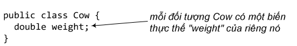
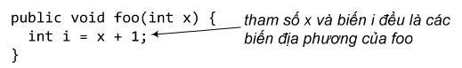
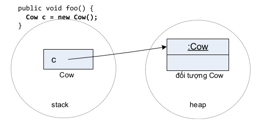
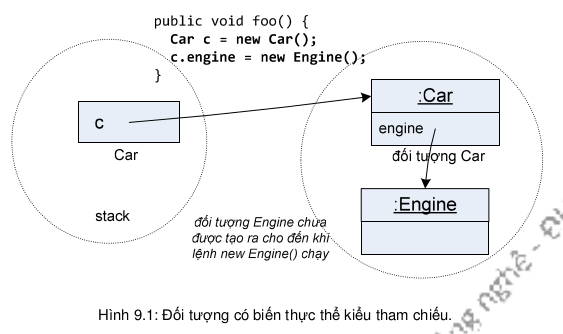

Trong chương này, ta nói về vòng đời của đối tượng: đối tượng được tạo ra như thế nào, nó nằm ở đâu, làm thế nào để giữ hoặc vứt bỏ đối tượng một cách có hiệu quả. Cụ thể, chương này trình bày về các khái niệm bộ nhớ heap, bộ nhớ stack, phạm vi, hàm khởi tạo, tham chiếu null...
Trước khi nói về chuyện gì xảy ra khi ta tạo một đối tượng, ta cần nói về hai vùng bộ nhớ stack và heap và cái gì được lưu trữ ở đâu. Đối với Java, heap và stack là hai vùng bộ nhớ mà lập trình viên cần quan tâm. Heap là nơi ở của các đối tượng, còn stack là chỗ của các phương thức và biến địa phương. Máy ảo Java toàn quyền quản lý hai vùng bộ nhớ này. Lập trình viên không thể và không cần can thiệp.
Đầu tiên, ta hãy phân biệt rõ ràng biến thực thể và biến địa phương, chúng là cái gì và sống ở đâu trong stack và heap. Nắm vững kiến thức này, ta sẽ dễ dàng hiểu rõ những vấn đề như phạm vi của biến, việc tạo đối tượng, quản lý bộ nhớ, luồng, xử lý ngoại lệ... những điều căn bản mà một lập trình viên cần nắm được (mà ta sẽ học dần trong chương này và những chương sau).
Biến thực thể được khai báo bên trong một lớp chứ không phải bên trong một phương thức. Chúng đại diện cho các trường dữ liệu của mỗi đối tượng (mà ta có thể điền các dữ liệu khác nhau cho các thực thể khác nhau của lớp đó). Các biến thực thể sống bên trong đối tượng chủ của chúng.
Biến địa phương, trong đó có các tham số, được khai báo bên trong một phương thức. Chúng là các biến tạm thời, chúng sống bên trong khung bộ nhớ của phương thức và chỉ tồn tại khi phương thức còn nằm trong bộ nhớ stack, nghĩa là khi phương thức đang chạy và chưa chạy đến ngoặc kết thúc (}).
Vậy còn các biến địa phương là các đối tượng? Nhớ lại rằng trong Java một biến thuộc kiểu không cơ bản thực ra là một tham chiếu tới một đối tượng chứ không phải chính đối tượng đó. Do đó, biến địa phương đó vẫn nằm trong stack, còn đối tượng mà nó chiếu tới vẫn nằm trong heap. Bất kể tham chiếu được khai báo ở đâu, là biến địa phương của một phương thức hay là biến thực thể của một lớp, đối tượng mà nó chiếu tới bao giờ cũng nằm trong heap.
Vậy biến thực thể nằm ở đâu? Các biến thực thể đi kèm theo từng đối tượng, chúng sống bên trong vùng bộ nhớ của đối tượng chủ tại heap. Mỗi khi ta gọi new Cow(), Java cấp phát bộ nhớ cho đối tượng Cow đó tại heap, lượng bộ nhớ được cấp phát đủ chỗ để lưu giá trị của tất cả các biến thực thể của đối tượng đó.
Nếu biến thực thể thuộc kiểu cơ bản, vùng bộ nhớ được cấp phát cho nó có kích thước tùy theo kích thước của kiểu dữ liệu nó được khai báo. Ví dụ một biến int cần 32 bit.
Còn nếu biến thực thể là đối tượng thì sao? Chẳng hạn, Car HAS-A Engine (ô tô có một động cơ), nghĩa là mỗi đối tượng Car có một biến thực thể là tham chiếu kiểu Engine. Java cấp phát bộ nhớ bên trong đối tượng Car đủ để lưu biến tham chiếu engine. Còn bản thân biến này sẽ chiếu tới một đối tượng Engine nằm bên ngoài, chứ không phải bên trong, đối tượng Car.
Vậy khi nào đối tượng Engine được cấp phát bộ nhớ trong heap? Khi nào lệnh new Engine() cho nó được chạy. Chẳng hạn, trong ví dụ Hình 9.2, đối tượng Engine được tạo mới để khởi tạo giá trị cho biến thực thể engine, lệnh khởi tạo nằm ngay trong khai báo lớp Car.
Còn trong ví dụ Hình 9.3, không có đối tượng Engine nào được tạo khi đối tượng Car được cấp phát bộ nhớ, engine không được khởi tạo. Ta sẽ cần đến các lệnh riêng biệt ở sau đó để tạo đối tượng Engine và gán giá trị cho engine, chẳng hạn như c.engine = new Engine(); trong Hình 9.1.
Bây giờ ta đã đủ kiến thức nền tảng để bắt đầu đi sâu vào quá trình tạo đối tượng.